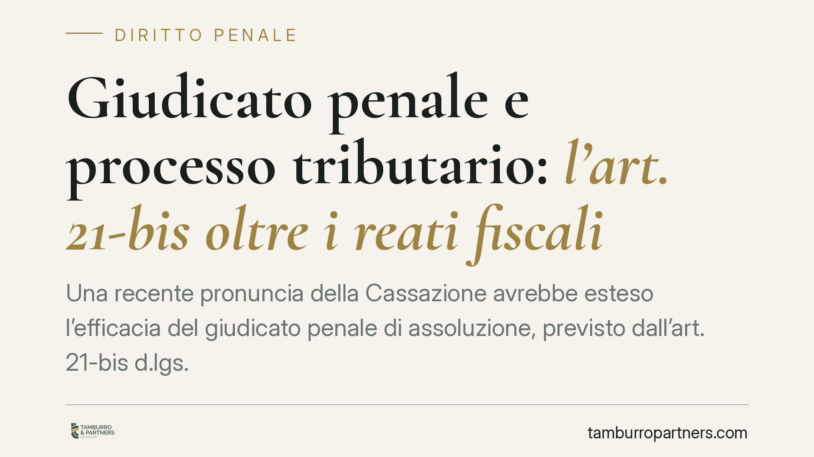

Giudicato penale e processo tributario: l'art. 21-bis oltre i reati fiscali
Una recente pronuncia della Cassazione avrebbe esteso l'efficacia del giudicato penale di assoluzione, previsto dall'art. 21-bis d.lgs. 74/2000, anche ai reati non tributari, purché i fatti materiali accertati coincidano con quelli fiscalmente rilevanti. La questione tocca il rapporto tra processo penale e tributario e merita attenzione, con le dovute cautele sulla fonte.

Premessa sulla fonte
La sentenza indicata come n. 16536/2026 non risulta, allo stato, verificabile nelle banche dati ufficiali e la datazione appare cronologicamente da confermare rispetto al momento della redazione. Trattiamo quindi il tema in via generale, sull'assetto normativo certo, segnalando che l'orientamento qui descritto va considerato in attesa di conferma degli estremi ufficiali (numero, sezione, data di deposito). Chi si trovi a gestire un contenzioso non fondi strategie difensive su un precedente non ancora riscontrato.
Inquadramento normativo
L'art. 21-bis del d.lgs. 74/2000 è stato introdotto dall'art. 1 del d.lgs. 87/2024, in attuazione della delega per la revisione del sistema sanzionatorio di cui alla L. 111/2023. La norma stabilisce che la sentenza penale irrevocabile di assoluzione perché il fatto non sussiste o l'imputato non lo ha commesso, pronunciata a seguito di giudizio dibattimentale, ha efficacia di giudicato nel processo tributario quanto ai fatti materiali oggetto di accertamento.
Due precisazioni sono decisive. La prima: l'efficacia riguarda i fatti materiali accertati dal giudice penale, non le valutazioni giuridiche. Il giudice tributario resta libero di qualificare quei fatti secondo le proprie categorie. La seconda: la norma richiede il giudizio dibattimentale. Restano quindi esclusi gli esiti raggiunti con riti diversi: il patteggiamento (art. 444 c.p.p.) non attiva l'efficacia di giudicato prevista dall'art. 21-bis.
Il criterio sostanziale: coincidenza del fatto, non del reato
Il punto qualificante dell'orientamento in commento è di ordine sostanziale. L'efficacia del giudicato non dipenderebbe dalla qualificazione del reato come tributario o meno, ma dalla coincidenza del fatto materiale accertato in sede penale con quello rilevante ai fini fiscali.
L'esempio tipico è quello di un'assoluzione per un reato comune – si pensi a una truffa o a una falsità – i cui accertamenti di fatto (l'inesistenza di una determinata operazione, la reale titolarità di un rapporto, l'effettività di un pagamento) incidano direttamente sulla pretesa tributaria. Se il giudice penale ha stabilito, con formula piena, che quel fatto non sussiste o non è attribuibile all'imputato, quell'accertamento non potrebbe essere disatteso nel processo tributario, quale che sia stata l'etichetta del reato.
I limiti dell'efficacia
L'apertura non è illimitata. L'efficacia opera solo per le formule assolutorie piene indicate dalla norma. Ne restano fuori:
- le assoluzioni per prescrizione, che non accertano l'insussistenza del fatto;
- le assoluzioni per mancanza dell'elemento soggettivo (assenza di dolo o colpa), che presuppongono un fatto comunque esistente;
- ogni pronuncia che non contenga un accertamento pieno e negativo sul fatto materiale.
È la differenza tra un fatto che *non c'è stato* e un fatto che c'è stato ma non è punibile: solo il primo caso rileva ai fini dell'art. 21-bis.
Implicazioni pratiche
Per il contribuente, l'esito assolutorio in sede penale può diventare un asset difensivo nel parallelo giudizio tributario, anche quando il capo di imputazione non riguardava un reato fiscale. Occorre però leggere con precisione la motivazione della sentenza penale: la formula usata e la natura dell'accertamento di fatto determinano se l'efficacia di giudicato scatti o meno.
Per l'Amministrazione finanziaria, il rischio è quello di vedersi opporre un accertamento penale definitivo su fatti che costituiscono il presupposto della pretesa. Ciò impone una gestione coordinata tra il piano penale e quello tributario fin dalle prime fasi.
Cosa fare in concreto
- Verificare gli estremi ufficiali della pronuncia prima di richiamarla in giudizio, evitando riferimenti non riscontrati.
- Analizzare la formula assolutoria: solo "il fatto non sussiste" o "l'imputato non lo ha commesso", a seguito di dibattimento, attivano l'efficacia.
- Confrontare i fatti materiali accertati in sede penale con quelli posti a fondamento della pretesa fiscale, verificandone l'effettiva coincidenza.
- Escludere dal ragionamento gli esiti da patteggiamento, prescrizione o assenza di dolo, privi di efficacia ai sensi dell'art. 21-bis.
- Valutare l'eventuale sospensione o il coordinamento del giudizio tributario in attesa della definitività della sentenza penale.
Disclaimer
Contributo informativo a cura di Tamburro & Partners - Avv. Giuseppe Tamburro. Non costituisce parere legale.
Ogni condominio ha una storia a sé.
Se gestisci un'amministrazione e vuoi un confronto su una specifica questione condominiale, scrivi allo studio. Ti rispondiamo entro un giorno lavorativo.